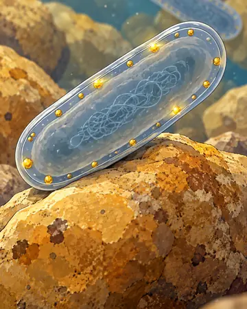
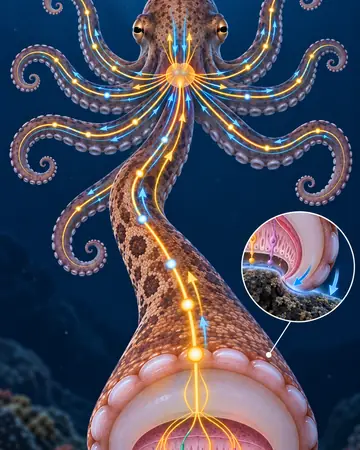
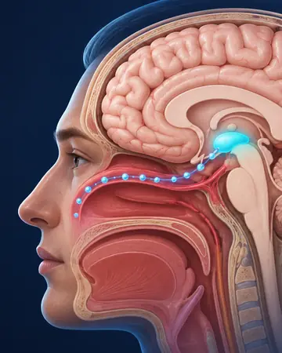

Science
Physique du quotidien, microbes et phénomènes invisibles à l'œil nu.
- Jusqu'à quelle hauteur peut-on boire avec une paille ?
- Comment une bactérie peut-elle fabriquer de l'or ?
Science · Animaux · Corps humain · Nature
Tu vois le phénomène. Tu comprends le mécanisme.
Des phénomènes étonnants de la science, des animaux, du corps humain et de la nature, expliqués simplement et en images.
@1min.pour.comprendre sur YouTube, TikTok, Instagram et Facebook
La chaîne
Pourquoi l'ortie pique-t-elle sans épine ? Comment une pieuvre goûte-t-elle avec ses bras ? Chaque vidéo part d'une chose que tu peux voir ou ressentir, puis révèle le mécanisme invisible qui l'explique.
Des illustrations scientifiques claires, des explications vérifiées, et aucune connaissance préalable nécessaire.
Une réaction visible ou une question concrète, dès la première seconde.
On zoome sous la surface : cellules, forces, signaux nerveux, molécules.
Une idée simple à retenir, et souvent une surprise en bonus.
Les univers

Physique du quotidien, microbes et phénomènes invisibles à l'œil nu.

Des capacités qui semblent impossibles, et la biologie qui les rend possibles.

Réactions, sensations et défenses : ce qui se passe vraiment sous ta peau.
Plantes, petites bêtes et milieux naturels, avec leurs stratégies parfois très bizarres.
Les articles
Chaque vidéo développée en article : le mécanisme expliqué pas à pas, ses limites et les publications scientifiques utilisées.
Questions fréquentes
Une chaîne de vulgarisation qui explique en vidéo et en images des phénomènes étonnants de la science, des animaux, du corps humain et de la nature. Chaque vidéo part d'un phénomène visible, puis révèle le mécanisme qui l'explique.
Sur YouTube, la plateforme principale, avec des Shorts et des formats plus longs, ainsi que sur TikTok, Instagram et Facebook. Le nom est le même partout : @1min.pour.comprendre.
Dans la section Articles : chaque vidéo y est développée en texte, avec les limites de ce que l'on sait et la liste des publications scientifiques utilisées.
Abonne-toi sur ta plateforme préférée pour ne manquer aucune explication.